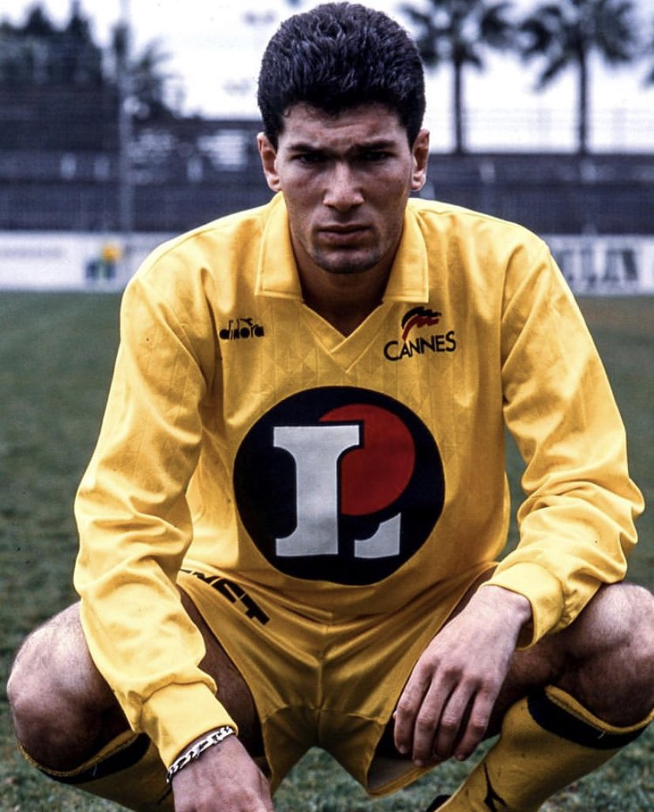
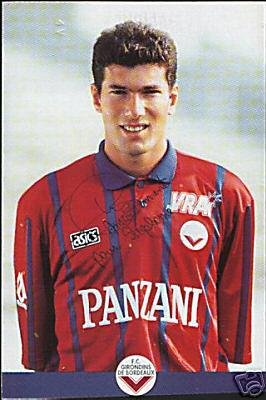
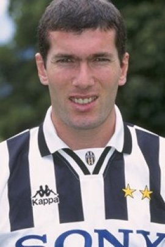
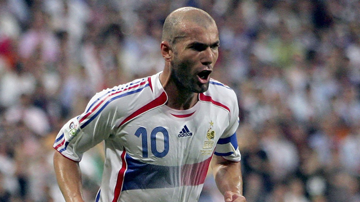

Zidane, "The Magician"
Zinedine Zidane, former captain of the France national team, and former coach of Real Madrid
“Zidane is one of the greatest players in history, a truly magnificent player.” — Franz Beckenbauer
“He played like a ‘general’ in midfield. He has technique, tricks, passing and also has an ability to score some of the best goals.” — Marco van Basten
” . . . the most elegant footballer I have ever seen” — Gary Lineker
Zizou only wore the jerseys of four clubs. He started his career at Cannes on the french league. Later he was signed by the Girondins of Bourdeux; this is where the started to shine and bloom reaching the final of the 1996 UEFA Cup. Next he would join his first big club, Juventus; during this time he would establish himself as one of Europe's finest, he would win two Serie A's titles and reach two Champions League finals. The last club of his career was Real Madrid which they would pay a record-breaking transfer fee; as a "merengue", Zizou won his first and only Champions League, scoring the winning goal -goal which is still remebered today and considered the best goal on a Champions League final. He would retire on 2006 against a match versus Villarreal.
- 
- 
- 

As an international team player, Zidane won the most significant cups any player could win: the World Cup and the Euro Cup. On both tournament he would have a significant role and scored important goals. He was and is still considered a national hero. Even close to his retirement, Zizou was close to win his second World Cup in 2006, getting a red card on the final and eventually loosing to Italy.

- 
At a personal level, Zidane is the only player in history to win the Ballon D'Or, World Cup, World Cup player of the tournament, Euro Cup, Euro Cup player of the tournament, and a Champions League. Just wow!